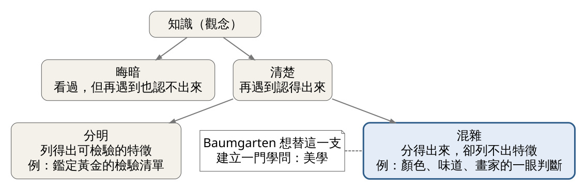
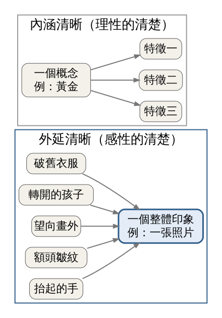

「美學」最初不是「研究漂亮東西的學問」。Baumgarten 在 1735 年造出這個詞時，主張用感官認識世界也是一種知識，有自己的好壞標準。這堂課要分辨兩種「清楚」：拆成特徵的清楚，和一眼把許多細節同時抓住的清楚。
史料｜一篇談詩的學位論文。 1735 年，二十出頭的 Alexander Gottlieb Baumgarten 在德國 Halle 發表論文《Meditationes philosophicae de nonnullis ad poema pertinentibus》（關於詩的若干哲學沉思）。他在文末（§116）借用希臘字 aisthēsis（感覺）造了拉丁詞 aesthetica，指一門研究「被感覺到的事物」的學問。University of California Press 1954 年出版的英譯本《Reflections on Poetry》，就把這篇論文稱為現代美學的起點。
經典理論｜他要回應的問題。 Baumgarten 身處 Leibniz 與 Wolff 的哲學傳統。Leibniz 在 1684 年的短文〈Meditationes de cognitione, veritate et ideis〉把知識分層：先分「晦暗」與「清楚」，清楚的知識再分「混雜」與「分明」（見圖 1）。

圖 1｜Leibniz 1684 年的知識分層，以及 Baumgarten 關心的位置。來源：本課程依 Leibniz〈Meditationes de cognitione, veritate et ideis〉（Jonathan Bennett 英譯）繪製，來源頁面
Leibniz 舉的例子很日常。顏色、氣味、味道，我們分得出來，卻列不出區分它們的特徵，所以沒辦法向天生失明的人解釋什麼是紅色。他也說，熟練的畫家一眼就分得出作品好壞，卻常說不出理由，只覺得少了一點什麼，他稱之為 je-ne-sais-quoi（說不上來的東西）。
在這套分類裡，感官知識被放在比較低的位置。Baumgarten 的問題是：這種「分得出好壞，卻說不出理由」的判斷，能不能有一門自己的學問？
Baumgarten 十五年後把這個想法寫成專書《Aesthetica》，分兩冊於 1750 年與 1758 年出版，全書以拉丁文寫成，最後並未寫完。1750 年原版的掃描頁可在 Source Library 線上翻閱。以下三點都是「Baumgarten 主張」，不是已被證實的事實。
1. 定義（經典理論，《Aesthetica》§1）。美學是「感性認識的科學」，原文為 scientia cognitionis sensitivae。同一段給了它四個別名：自由藝術的理論、「低級認識論」（gnoseologia inferior）、美地思考的技藝、類理性的技藝。四個名稱裡只有一個提到藝術，Baumgarten 關心的主要是「認識」。
2. 目的（經典理論，《Aesthetica》§14）。美學的目標是「感性認識本身的完善」，原文接著說 Haec autem est pulcritudo：這就是美。反過來，感性認識的不完善就是醜。在 Baumgarten 這裡，美不是東西身上的一種顏色或形狀，而是「我們用感官把一件事抓得有多完整」。
3. 兩種清楚（經典理論，依二手文獻：Dabney Townsend，Routledge Encyclopedia of Philosophy，1998）。科學追求的是把一個概念拆成幾個明確特徵，例如鑑定黃金靠一組可以列出來的檢驗。Baumgarten 讓感性認識追求另一種清楚：一個表象裡同時容納的可感細節越多，就越清楚。Townsend 的說明是：繞著一件東西看遍各面，比遠遠從一個角度瞥一眼清楚。研究者通常把前者稱為「內涵清晰」，後者稱為「外延清晰」（見圖 2）。

圖 2｜內涵清晰是把一個概念拆成少數明確特徵；外延清晰是把許多細節收進同一個整體印象。外延清晰一側的細節取自本課主例的照片（圖 3）。來源：本課程依 Dabney Townsend（Routledge Encyclopedia of Philosophy，1998）的說明繪製，來源頁面
三點合起來看，Baumgarten 把感性當成另一條通往知識的路：理性靠拆解，感性靠豐富。
內涵清晰（理性） | 外延清晰（感性） | |
做法 | 拆成少數明確特徵 | 把許多細節一起抓住 |
日常例子 | 黃金的檢驗清單 | 一眼認出朋友的腳步聲 |
怎麼判斷好壞 | 特徵能否逐條驗證 | 整體是否豐富完整；完善即美（§14） |
史料｜Dorothea Lange《Migrant Mother》，1936 年 3 月（見圖 3）。 美國國會圖書館的資料記載：Lange 當時替新政機構 Resettlement Administration 工作，在加州 Nipomo 一處豌豆採收工營地外拍下一位 32 歲、七個孩子的母親。這位女性後來被確認是 Florence Owens Thompson。
圖 3｜Dorothea Lange，《Migrant Mother》，1936 年。美國國會圖書館典藏。授權：Public domain（美國聯邦政府職務作品），來源頁面
Lange 在 1960 年 2 月《Popular Photography》的回憶文中說，她沒有問對方姓名，只從同一個方向一步步靠近，拍了五張。對方告訴她，全家靠田裡凍壞的蔬菜和孩子抓的鳥過活，剛把車輪胎賣掉換食物。國會圖書館頁面寫的是六張，和 Lange 自述的五張不同；回憶文寫於事後二十四年，細節應視為當事人說法。
用 Baumgarten 的框架讀這張照片（本篇的應用分析，非 Baumgarten 本人所述）。
先想像一份 1936 年的農工調查報告：收入多少、幾口人、住在哪裡。每一項都能驗證，這是內涵清晰。你讀完會「知道」情況很糟。
再看圖 3。一個畫面同時放進：她抬起的手停在下巴旁、額頭的皺紋、望向畫外的視線、兩個孩子把臉轉開靠在她肩上、懷裡的嬰兒、破舊的衣服。你沒辦法把這些細節一條條列成證據，它們是一起打到你的。你看完會「感到」一種重量，而且很難說清楚為什麼。Leibniz 把這種判斷叫做「清楚但混雜」，Baumgarten 想替它爭取的，就是一門學問的位置。
Lange 「同一方向、逐步靠近」的拍法還多說明了一件事。越靠近，帳篷與營地等背景資訊越少，但臉、手、孩子之間的關係越集中。可見「外延清晰」要看的是一眼看到的整體裡，有多少細節彼此呼應；細節多，不一定就清楚。這是本篇的延伸解讀，今天的練習可以自己驗證。
經典理論，依二手文獻。 Leibniz 在一封寫給數學家 Christian Goldbach 的信（1712 年 4 月 27 日）裡，把音樂形容成「心靈不知道自己在計數的一種隱藏算術練習」。這句話常被轉引，本篇依據的是 St Andrews 大學數學史檔案的引文頁，該頁標明轉引自 Oliver Sacks《The Man Who Mistook His Wife for a Hat》，未查到書信原文。Leibniz 與 Goldbach 的書信確實存在，可參見 Juschkewitsch 與 Kopelewitsch 在《Studia Leibnitiana》1988 年的整理。
這句話正好接得上今天的理論。聽到一個走音的音，你立刻知道「不對」，但大多數人說不出它偏了多少。聲音背後有可以計算的比例，例如彈吉他時，把弦按在正中間，音會高一個八度。這是內涵清晰的部分。但聽的當下，耳朵是一次把整個聲響抓住，還沒意識到任何比例，判斷就已經做完了。照片和和弦都可以事後拆成數據，但我們第一時間的理解，並不是拆解出來的。
工具：手機、一張紙、一支筆。地點：家裡、餐桌或上班路上都可以。
看（5 分鐘）
選一個你每天都會看到的對象：早餐桌、窗外、上班路上的一個街角。先不要分析，看 30 秒後，在紙上用一句話寫下「它給你的感覺」。接著用剩下的時間，寫三個你「說得出來」的特徵（例如：白色碗、熱氣、木頭桌面）。
做（10 分鐘）
模仿 Lange 的拍法：對同一個對象、從同一個方向，用手機拍五張，每拍一張就往前一步（不要用數位變焦）。每張拍完在紙上寫兩欄：這張「少了什麼」、「多了什麼」。最後從五張裡挑出最接近你在「看」那一步寫下的感覺的一張。
回顧（5 分鐘）
以下連結皆於 2026-10-29 開啟查核。Stanford Encyclopedia of Philosophy 的 Baumgarten 條目當天無法開啟，未作為來源。
來源 | 類型 | 本篇用於 |
Baumgarten《Aesthetica》1750 年原版掃描頁 §14 | 經典理論（原典） | §14 拉丁原文 |
Baumgarten《Aesthetica》§§1–13 英譯，Juan Acevedo 譯，German History Intersections（底本：Mirbach 編，Meiner 2007）PDF | 經典理論（譯本） | §1 定義與別名 |
Baumgarten《Reflections on Poetry》（1735 年論文英譯），University of California Press 1954 出版社頁 | 經典理論 | 1735 年造詞 |
Peter Saint-Andre〈Aestheticae〉引 Aschenbrenner 與 Holther 譯本§116 連結 | 依二手文獻 | §116 造詞位置 |
Dabney Townsend〈Baumgarten, Alexander Gottlieb〉，Routledge Encyclopedia of Philosophy 1998 連結 | 依二手文獻 | 外延清晰、圖 2 |
Leibniz〈Meditationes de cognitione, veritate et ideis〉1684，Jonathan Bennett 英譯 PDF | 經典理論（譯本） | 知識分類、畫家例、圖 1 |
Leibniz 引文頁，MacTutor（St Andrews）連結 | 依二手文獻（轉引 Sacks） | 音樂即隱藏算術 |
Juschkewitsch & Kopelewitsch〈La correspondance de Leibniz avec Goldbach〉，Studia Leibnitiana 20(2), 1988 連結 | 史料研究 | 書信存在 |
Library of Congress〈Dorothea Lange's "Migrant Mother"〉連結 | 史料 | 拍攝時地、人物、圖 3 |
Wikipedia〈Migrant Mother〉連結 | 依二手文獻 | 圖 3 的公有領域狀態 |
Lange 自述，Popular Photography 1960 年 2 月，Hanover College 摘錄 連結 | 史料（當事人自述） | 拍攝經過 |
延伸閱讀：想讀原典可從《Reflections on Poetry》開始，篇幅短且拉英對照。下一堂將進入柏拉圖與亞里斯多德的模仿論。